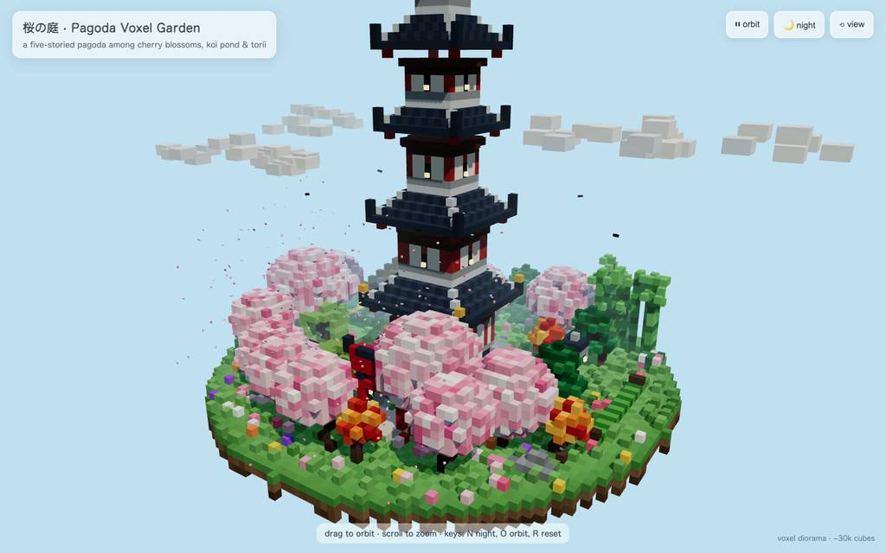
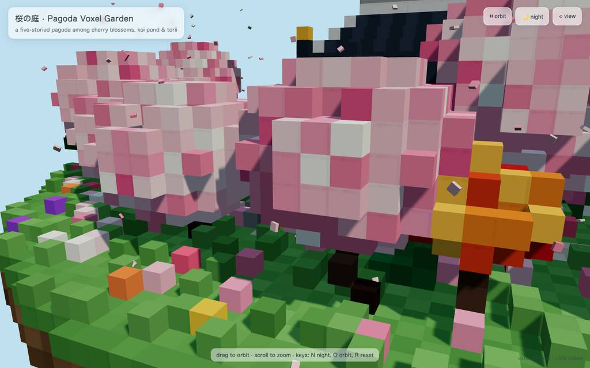
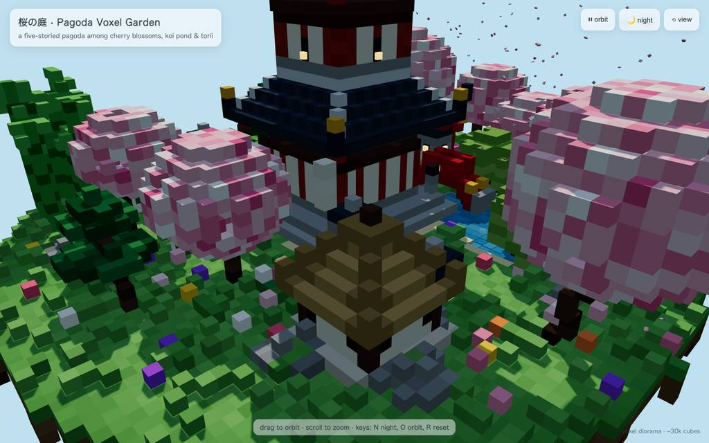
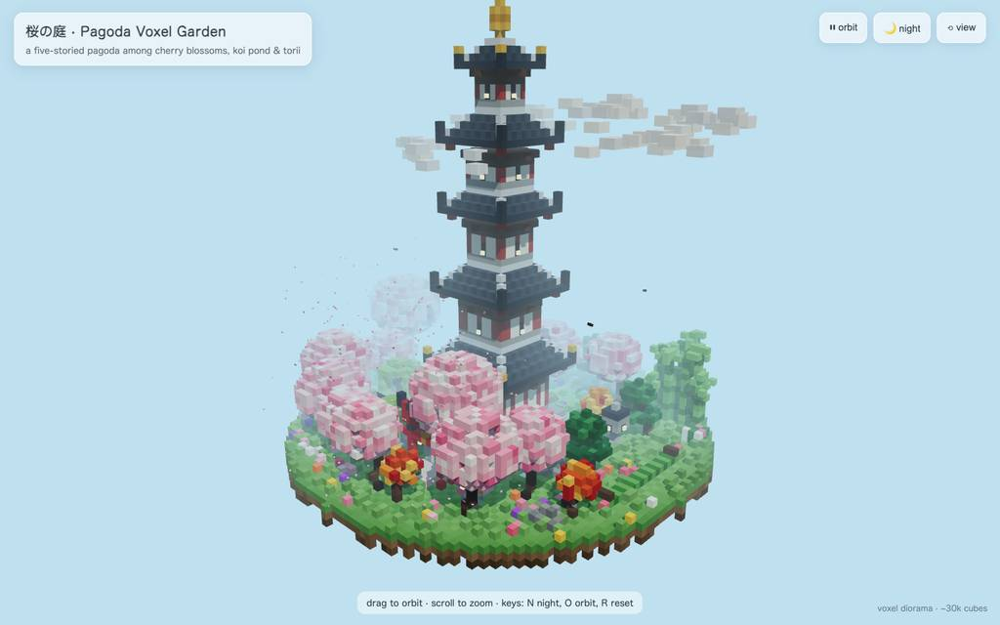
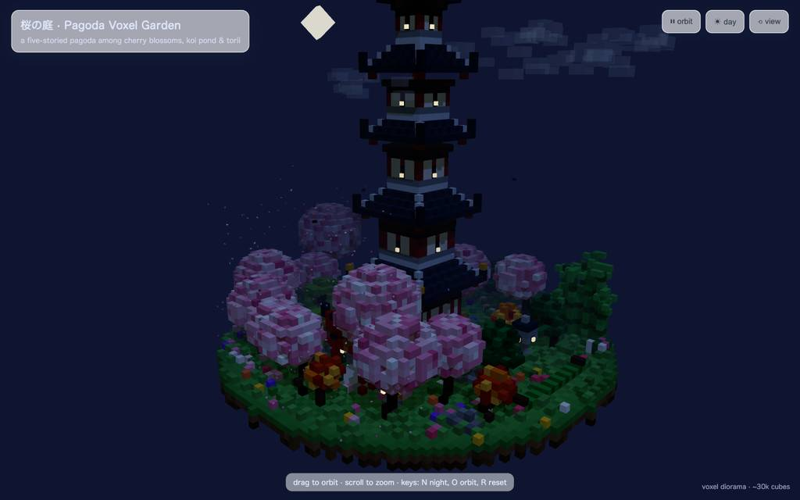
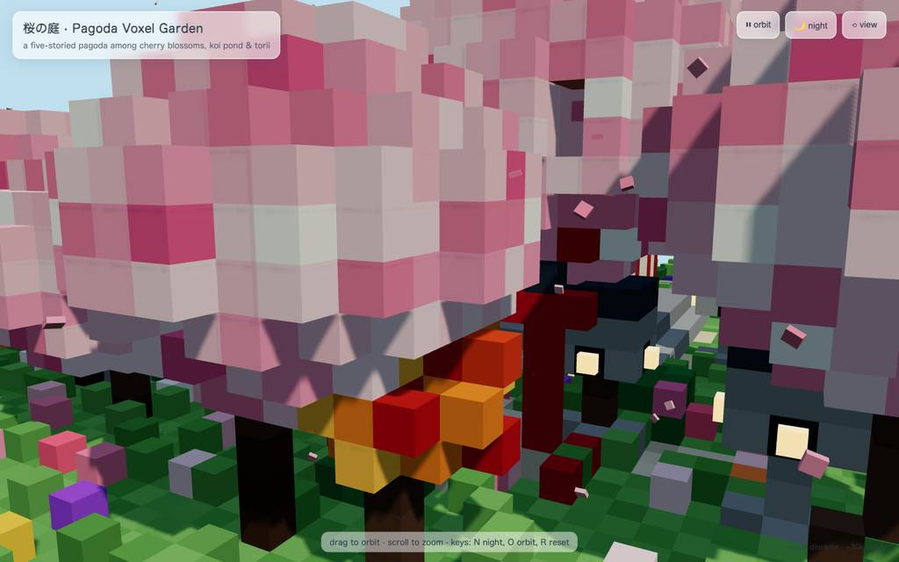

runs / 2026-10-26 / 221852-201000-strata-huihui-q3.8-fn-q4-xs-8f2dd6a1
86コール1352秒、五重塔ボクセル庭園を単一HTMLに生成し検証完了
huihui-qwen3.8-flash-next-abliterated-v2-ud-iq4_xs (Strata 0.1.48) が、五重塔のボクセル庭園を単一HTMLにする依頼を受け、86コール・経過1352秒で pagoda-garden.html (35KB) を完成させ exit 0 で終えた。#4 の一発生成で出力 20,961 トークンを吐いた後、edit 36 件と browser eval 18 件を往復して屋根・池・夜演出を作り込み、終盤はキャプション修正と後片付けで締めた。
成果物
work/pagoda-garden.html（35,132 バイト）をそのまま同梱している。重いシーンもあるため、必要なときだけ起動する。
pagoda-garden.html
34 KB · 起動するまで読み込まない












全 29 枚から等間隔に 12 枚を選んでいる。logs/events.jsonl の画像ブロックを内容ハッシュで重複排除して時系列に並べた、制作中の検証用スクリーンショット。最終版とは限らない。
成果物の構成
| 要素 | 内容 |
|---|---|
| 成果物 | 単一 HTML ファイル pagoda-garden.html 35KB。Three.js は importmap 経由の CDN。約 14k instanced voxels、8 draw calls と説明。 |
| 五重塔 | 石積みの段階的基部、朱柱と黒い軒梁の白壁、障子の発光キューブ、赤欄干、青灰色の金字塔屋根 5 枚、金色の宝珠 12 voxel。 |
| 庭園建築 | 朱の鳥居と砂利道、金無垢の赤いアーチ橋、茅葺き茶屋(灯る出入口と煙突)、蹲踞、10 基の発光石灯籠、砂紋、飛石、竹垣。 |
| 植栽 | 桜 11 本(5 色調の花+落花輪)、もみじ、重ね松、柳 2 本、竹 26 本の竹林、シャクナゲ、苔岩、約 1,000 群の草花。 |
| 鯉池 | 揺れる不整形の水面、尾を振る鯉 3 尾、蓮葉とピンク/白の蓮、岩の岸辺。 |
| 大気 | 漂う桜の花びら 260 枚、雲、旋回する鳥、ソフトシャドウと fog、ACES トーンマップ。 |
| 操作 | ドラッグ/スクロール視点、自動回転切替、N で昼夜遷移(星空・voxel 月・灯り)、O で軌道切替、R で視点リセット。 |
| 検証 | headless Chromium で 10 以上のカメラアングル、コンソールエラーなし、82fps と報告。 |
モデルの最終メッセージから読み取った内容。コードの確認はしていない。
タイムライン
86 回の API 呼び出しを時間順に並べた。上段の帯の幅が各呼び出しの所要時間で、帯の間の空白がツールの実行時間。下段はその時点のコンテキスト長。細い帯は、エージェントが別に投げた補助リクエスト（画像判定など）。 upstream が usage を返さない場合は、events.jsonl の message_end から復元する。復元できない値は ? で示す。
最も長い 2 回の生成（#4 275 秒・#12 91 秒）で 366.7 秒、壁時計の 27.1%。出力トークンの上位 4 回（#4・#12・#2・#18）で全体の 44.8%（33,586 / 74,999）。推論以外（ツール実行など）は約 72 秒（5%）。
フェーズ別の内訳
| フェーズ | 経過 | 所要 | 全体に占める割合 | 呼び出し | 出力 tok | 何をしたか |
|---|---|---|---|---|---|---|
| 準備・計画 | 0:00–1:18 | 78 秒 | 5.8% | 3 | 4,965 | 補助判定を 1 件挟み、bash でワークスペースを確認し、todo でビルド計画を固めた。 |
| 初期生成と修正 | 1:18–6:24 | 306 秒 | 22.6% | 8 | 22,189 | write で HTML を一発生成後、glow registry を巡る edit を 3 度やり取りし、ローカルサーバーを起動した(E2)。 |
| 池と発光の調整 | 6:24–10:00 | 216 秒 | 16.0% | 10 | 13,556 | island セクションを 91.5 秒かけて精読し、pond bed、水抽出の順序、glowMesh、階段や橋などの発光部を立て直した。 |
| 検証と手直し | 10:00–13:35 | 215 秒 | 15.9% | 20 | 10,551 | ブラウザで表示確認しながら home camera、屋根ピラミッド(E4)、壁色、debug export を修正し、multi-view で点検した。 |
| 夜と水の演出 | 13:35–19:58 | 382 秒 | 28.3% | 28 | 17,575 | 桜・茶屋の見通しや雲の高さを整え、蓮、鯉の浮上、夜照明、月、池拡大を反復した(池 edit 失敗は E8・E9)。 |
| 整理と最終確認 | 19:58–22:31 | 154 秒 | 11.4% | 17 | 6,163 | fog 調整と死んだコード除去、fps/インスタンス数確認、voxel 数キャプションの 3 度修正後、スクショ片付けとサーバー停止で締めた。 |
フェーズの切れ目は、ログから読み取れる作業内容の変わり目（LLM による区切り）。所要時間は、そのフェーズの最初の呼び出しの開始から次のフェーズの最初の呼び出しの開始まで。
86 回の呼び出しを表で見る
| # | 種別 | フェーズ | 開始 | 所要 秒 | prompt | うち cache | 出力 | tok/s | HTTP | ツール |
|---|---|---|---|---|---|---|---|---|---|---|
| 1 | 補助 | 準備・計画 | 0:00 | 7.9 | 180 | 0 | 547 | 75.8 | 200 | — |
| 2 | 主ループ | 準備・計画 | 0:00 | 75.5 | 8,009 | 7,816 | 4,270 | 63.7 | 200 | bash |
| 3 | 主ループ | 準備・計画 | 1:16 | 2.6 | 12,353 | 12,278 | 148 | 68.2 | 200 | todo |
| 4 | 主ループ | 初期生成と修正 | 1:18 | 275.2 | 12,722 | 12,500 | 20,961 | 76.3 | 200 | write |
| 5 | 主ループ | 初期生成と修正 | 5:54 | 12.4 | 33,726 | 12,717 | 370 | 63.6 | 200 | edit |
| 6 | 主ループ | 初期生成と修正 | 6:06 | 2.4 | 34,372 | 34,095 | 101 | 61.8 | 200 | read |
| 7 | 主ループ | 初期生成と修正 | 6:08 | 3.9 | 34,843 | 34,472 | 184 | 60.4 | 200 | edit |
| 8 | 主ループ | 初期生成と修正 | 6:12 | 2.3 | 35,209 | 35,028 | 110 | 67.6 | 200 | grep |
| 9 | 主ループ | 初期生成と修正 | 6:15 | 2.2 | 35,604 | 35,318 | 102 | 71.3 | 200 | edit |
| 10 | 主ループ | 初期生成と修正 | 6:17 | 3.8 | 35,790 | 35,706 | 227 | 69.6 | 200 | bash + read |
| 11 | 主ループ | 初期生成と修正 | 6:21 | 3.4 | 39,241 | 36,018 | 134 | 73.9 | 200 | bash |
| 12 | 主ループ | 池と発光の調整 | 6:24 | 91.5 | 39,443 | 39,376 | 5,843 | 64.4 | 200 | read |
| 13 | 主ループ | 池と発光の調整 | 7:56 | 6.2 | 46,435 | 45,286 | 312 | 63.7 | 200 | edit |
| 14 | 主ループ | 池と発光の調整 | 8:02 | 4.4 | 46,916 | 46,747 | 223 | 59.2 | 200 | read |
| 15 | 主ループ | 池と発光の調整 | 8:06 | 10.9 | 47,936 | 47,139 | 665 | 67.7 | 200 | edit |
| 16 | 主ループ | 池と発光の調整 | 8:17 | 4.7 | 48,763 | 48,602 | 258 | 64.0 | 200 | read |
| 17 | 主ループ | 池と発光の調整 | 8:22 | 5.7 | 49,685 | 49,021 | 298 | 63.3 | 200 | edit |
| 18 | 主ループ | 池と発光の調整 | 8:28 | 37.3 | 50,107 | 49,984 | 2,512 | 68.4 | 200 | grep |
| 19 | 主ループ | 池と発光の調整 | 9:05 | 17.9 | 53,784 | 52,619 | 1,149 | 69.2 | 200 | edit |
| 20 | 主ループ | 池と発光の調整 | 9:23 | 29.4 | 56,051 | 54,934 | 1,852 | 66.0 | 200 | edit |
| 21 | 主ループ | 池と発光の調整 | 9:52 | 8.1 | 58,537 | 57,904 | 444 | 62.0 | 200 | edit |
| 22 | 主ループ | 検証と手直し | 10:00 | 5.4 | 59,157 | 58,980 | 309 | 65.3 | 200 | eval |
| 23 | 主ループ | 検証と手直し | 10:10 | 12.8 | 60,341 | 59,466 | 713 | 62.1 | 200 | edit |
| 24 | 主ループ | 検証と手直し | 10:22 | 2.1 | 61,182 | 61,055 | 90 | 61.2 | 200 | read |
| 25 | 主ループ | 検証と手直し | 10:24 | 3.4 | 61,478 | 61,272 | 165 | 62.0 | 200 | edit |
| 26 | 主ループ | 検証と手直し | 10:28 | 4.4 | 61,832 | 61,644 | 240 | 64.5 | 200 | todo + eval |
| 27 | 主ループ | 検証と手直し | 10:36 | 16.3 | 63,057 | 62,073 | 930 | 62.2 | 200 | read |
| 28 | 主ループ | 検証と手直し | 10:52 | 31.3 | 64,713 | 63,052 | 2,054 | 69.2 | 200 | edit |
| 29 | 主ループ | 検証と手直し | 11:23 | 10.4 | 66,847 | 66,767 | 699 | 71.2 | 200 | edit |
| 30 | 主ループ | 検証と手直し | 11:34 | 4.7 | 67,974 | 67,547 | 221 | 57.6 | 200 | eval |
| 31 | 主ループ | 検証と手直し | 11:42 | 16.7 | 68,999 | 68,194 | 919 | 59.8 | 200 | read |
| 32 | 主ループ | 検証と手直し | 11:58 | 11.1 | 70,301 | 69,917 | 604 | 59.1 | 200 | edit |
| 33 | 主ループ | 検証と手直し | 12:10 | 5.5 | 71,055 | 70,906 | 299 | 61.8 | 200 | edit |
| 34 | 主ループ | 検証と手直し | 12:15 | 4.2 | 71,613 | 71,353 | 200 | 59.1 | 200 | edit |
| 35 | 主ループ | 検証と手直し | 12:19 | 3.2 | 71,947 | 71,814 | 169 | 63.9 | 200 | edit |
| 36 | 主ループ | 検証と手直し | 12:23 | 4.4 | 72,278 | 72,115 | 240 | 64.0 | 200 | edit |
| 37 | 主ループ | 検証と手直し | 12:27 | 1.9 | 72,606 | 72,518 | 98 | 71.7 | 200 | grep |
| 38 | 主ループ | 検証と手直し | 12:29 | 2.7 | 72,778 | 72,703 | 139 | 62.7 | 200 | edit |
| 39 | 主ループ | 検証と手直し | 12:32 | 5.6 | 73,021 | 72,918 | 359 | 71.4 | 200 | eval |
| 40 | 主ループ | 検証と手直し | 12:40 | 13.2 | 74,304 | 73,380 | 762 | 64.3 | 200 | eval |
| 41 | 主ループ | 検証と手直し | 12:55 | 39.6 | 75,939 | 12,717 | 1,341 | 65.8 | 200 | eval |
| 42 | 主ループ | 夜と水の演出 | 13:35 | 33.2 | 77,499 | 45,485 | 1,431 | 62.2 | 200 | edit |
| 43 | 主ループ | 夜と水の演出 | 14:08 | 2.8 | 79,096 | 78,931 | 128 | 61.9 | 200 | grep |
| 44 | 主ループ | 夜と水の演出 | 14:11 | 10.3 | 79,722 | 79,223 | 600 | 64.0 | 200 | edit |
| 45 | 主ループ | 夜と水の演出 | 14:22 | 3.8 | 80,936 | 80,323 | 175 | 64.3 | 200 | todo + todo |
| 46 | 主ループ | 夜と水の演出 | 14:25 | 5.9 | 81,451 | 81,112 | 356 | 70.5 | 200 | eval |
| 47 | 主ループ | 夜と水の演出 | 14:37 | 29.8 | 82,038 | 45,485 | 1,103 | 61.8 | 200 | read |
| 48 | 主ループ | 夜と水の演出 | 15:07 | 5.2 | 83,838 | 83,141 | 250 | 60.3 | 200 | edit |
| 49 | 主ループ | 夜と水の演出 | 15:12 | 5.4 | 84,383 | 84,087 | 330 | 71.7 | 200 | eval |
| 50 | 主ループ | 夜と水の演出 | 15:21 | 24.9 | 84,945 | 61,869 | 1,099 | 63.8 | 200 | edit |
| 51 | 主ループ | 夜と水の演出 | 15:46 | 2.7 | 86,173 | 86,045 | 132 | 62.8 | 200 | grep |
| 52 | 主ループ | 夜と水の演出 | 15:49 | 4.3 | 86,694 | 86,306 | 212 | 62.4 | 200 | edit |
| 53 | 主ループ | 夜と水の演出 | 15:53 | 5.4 | 87,092 | 86,907 | 330 | 70.2 | 200 | eval |
| 54 | 主ループ | 夜と水の演出 | 16:02 | 33.3 | 87,655 | 61,869 | 1,479 | 61.8 | 200 | read |
| 55 | 主ループ | 夜と水の演出 | 16:36 | 17.3 | 89,898 | 89,134 | 1,045 | 64.5 | 200 | edit |
| 56 | 主ループ | 夜と水の演出 | 16:53 | 7.2 | 91,067 | 90,944 | 451 | 69.1 | 200 | eval |
| 57 | 主ループ | 夜と水の演出 | 17:04 | 22.0 | 91,749 | 78,253 | 1,115 | 65.8 | 200 | eval |
| 58 | 主ループ | 夜と水の演出 | 17:30 | 31.8 | 93,164 | 78,253 | 1,614 | 61.1 | 200 | edit |
| 59 | 主ループ | 夜と水の演出 | 18:02 | 2.7 | 94,960 | 94,779 | 113 | 58.2 | 200 | grep |
| 60 | 主ループ | 夜と水の演出 | 18:04 | 3.6 | 95,253 | 94,955 | 152 | 61.3 | 200 | grep |
| 61 | 主ループ | 夜と水の演出 | 18:08 | 12.4 | 95,600 | 95,405 | 752 | 64.5 | 200 | edit |
| 62 | 主ループ | 夜と水の演出 | 18:20 | 2.3 | 96,765 | 96,353 | 82 | 60.9 | 200 | grep |
| 63 | 主ループ | 夜と水の演出 | 18:23 | 7.8 | 96,980 | 96,846 | 430 | 60.0 | 200 | edit |
| 64 | 主ループ | 夜と水の演出 | 18:31 | 6.6 | 97,712 | 97,410 | 391 | 68.6 | 200 | eval |
| 65 | 主ループ | 夜と水の演出 | 18:43 | 38.2 | 98,335 | 78,253 | 1,974 | 64.3 | 200 | edit |
| 66 | 主ループ | 夜と水の演出 | 19:22 | 3.3 | 100,503 | 98,330 | 94 | 57.4 | 200 | read |
| 67 | 主ループ | 夜と水の演出 | 19:25 | 5.4 | 101,171 | 100,596 | 287 | 65.5 | 200 | edit |
| 68 | 主ループ | 夜と水の演出 | 19:30 | 4.6 | 101,613 | 101,457 | 262 | 68.5 | 200 | edit |
| 69 | 主ループ | 夜と水の演出 | 19:35 | 18.7 | 102,273 | 101,875 | 1,188 | 67.1 | 200 | eval |
| 70 | 主ループ | 整理と最終確認 | 19:58 | 29.0 | 103,705 | 78,253 | 1,171 | 59.2 | 200 | edit |
| 71 | 主ループ | 整理と最終確認 | 20:27 | 2.3 | 104,997 | 104,876 | 110 | 67.8 | 200 | grep |
| 72 | 主ループ | 整理と最終確認 | 20:29 | 5.9 | 105,858 | 105,106 | 319 | 65.8 | 200 | grep |
| 73 | 主ループ | 整理と最終確認 | 20:35 | 5.8 | 107,521 | 106,178 | 278 | 63.9 | 200 | edit |
| 74 | 主ループ | 整理と最終確認 | 20:41 | 9.6 | 108,417 | 107,799 | 577 | 67.5 | 200 | eval |
| 75 | 主ループ | 整理と最終確認 | 20:56 | 19.6 | 109,242 | 78,253 | 609 | 65.3 | 200 | eval |
| 76 | 主ループ | 整理と最終確認 | 21:19 | 13.2 | 110,048 | 94,637 | 460 | 59.9 | 200 | eval |
| 77 | 主ループ | 整理と最終確認 | 21:33 | 8.7 | 110,538 | 110,507 | 493 | 59.8 | 200 | edit |
| 78 | 主ループ | 整理と最終確認 | 21:42 | 2.2 | 111,180 | 111,032 | 105 | 69.3 | 200 | edit |
| 79 | 主ループ | 整理と最終確認 | 21:44 | 1.7 | 111,421 | 111,285 | 64 | 66.3 | 200 | read |
| 80 | 主ループ | 整理と最終確認 | 21:46 | 2.6 | 111,848 | 111,485 | 102 | 60.2 | 200 | edit |
| 81 | 主ループ | 整理と最終確認 | 21:49 | 4.6 | 112,080 | 111,952 | 262 | 66.1 | 200 | eval |
| 82 | 主ループ | 整理と最終確認 | 21:57 | 12.8 | 112,539 | 94,637 | 352 | 61.5 | 200 | eval + bash |
| 83 | 主ループ | 整理と最終確認 | 22:10 | 5.5 | 113,023 | 112,890 | 317 | 65.0 | 200 | bash + todo |
| 84 | 主ループ | 整理と最終確認 | 22:15 | 4.0 | 113,506 | 113,339 | 207 | 61.8 | 200 | bash + todo |
| 85 | 主ループ | 整理と最終確認 | 22:19 | 2.5 | 113,851 | 113,714 | 109 | 58.9 | 200 | bash |
| 86 | 主ループ | 整理と最終確認 | 22:22 | 9.5 | 113,994 | 113,959 | 628 | 69.2 | 200 |
試行錯誤
ツールがエラー（isError）を返した結果の一覧。ツールは成功したのにモデル自身が内容を壊したケースは、ここには出ない。
エラーとして記録された 12 件
| 経過 | ツール | 起きたこと | 分類 |
|---|---|---|---|
| 6:06 | edit | 118 行目でブロックを解決できず glow registry の edit が失敗し、read 経由の再 edit で対応した。line 1: `PUT 118*:` could not resolve a syntactic block beginning on line 118 (unsupported language, blank/closer line, or parse error). Use `PUT 118.=M:` with explicit lines. 116:function box(x0,y0,z | edit パース失敗 |
| 6:20 | bash | Service mode で async/timeout が使えずサーバー起動 bash が拒否され、次コール #11 で起動し直した。Service mode does not accept async or timeout; use ready.timeout for readiness. | bash 引数エラー |
| 10:22 | edit | home camera の edit が未表示の 55 行目に anchor して失敗し、read で確認後に再 edit した。This edit anchors to lines 55 of pagoda-garden.html that [pagoda-garden.html#6755] never displayed (it showed a partial range, a search hit, or a folded summary). Actual file content at those lines: 5 | edit 行未表示 |
| 11:23 | edit | PUT 283-304 の edit が末尾重複かつ短すぎると拒否され、同じ意図の edit をリトライした。`PUT 283.=304:` rejected: the body ends by restating the 1 line(s) just below the range, but is too short to be the full final content of the selected range. Re-issue with the range covering exactly t | edit 範囲不一致 |
| 12:37 | eval | multi-view 点検の eval が jpeg 1024x640・58.70 KB のスクリーンショットをエラー結果で返した。Screenshot captured Format: image/jpeg (58.70 KB) Dimensions: 1024x640 [Image: original 1600x1000 at capture scale 1.25, displayed at 1024x640. Multiply image coordinates by 1.25 to get viewport CSS p | eval スクショ |
| 14:08 | edit | 配置行の edit が未表示の 419-420 行目 anchor で失敗し、grep で行を特定し直した。This edit anchors to lines 419-420 of pagoda-garden.html that [pagoda-garden.html#EC4E] never displayed (it showed a partial range, a search hit, or a folded summary). Actual file content at those lin | edit 行未表示 |
| 18:02 | edit | 夜補正の edit が 664-665 行目 anchor で失敗し、grep で該当行を特定した。This edit anchors to lines 664-665 of pagoda-garden.html that [pagoda-garden.html#CF82] never displayed (it showed a partial range, a search hit, or a folded summary). Actual file content at those lin | edit 行未表示 |
| 19:22 | edit | 池拡大の edit が 136・534 行目 anchor で失敗し、read で正確な行を取得した。This edit anchors to lines 136, 534 of pagoda-garden.html that [pagoda-garden.html#EE31] never displayed (it showed a partial range, a search hit, or a folded summary). Actual file content at those li | edit 行未表示 |
| 19:30 | edit | リトライの edit も 137 行目 anchor で失敗し、さらにリトライで成立した。This edit anchors to lines 137 of pagoda-garden.html that [pagoda-garden.html#EE31] never displayed (it showed a partial range, a search hit, or a folded summary). Actual file content at those lines: | edit 行未表示 |
| 20:27 | edit | fog 後退の edit が 83 行目 anchor で失敗し、grep で fog と死んだコードを特定した。This edit anchors to lines 83 of pagoda-garden.html that [pagoda-garden.html#36D9] never displayed (it showed a partial range, a search hit, or a folded summary). Actual file content at those lines: 8 | edit 行未表示 |
| 21:42 | edit | voxel 数キャプションの edit が 37 行目 anchor で失敗し、再 edit と read を経た。This edit anchors to lines 37 of pagoda-garden.html that [pagoda-garden.html#798F] never displayed (it showed a partial range, a search hit, or a folded summary). Actual file content at those lines: 3 | edit 行未表示 |
| 21:44 | edit | 同じく 40 行目 anchor で失敗し、read のあと 3 度目の edit で成立した。This edit anchors to lines 40 of pagoda-garden.html that [pagoda-garden.html#798F] never displayed (it showed a partial range, a search hit, or a folded summary). Actual file content at those lines: 4 | edit 行未表示 |
経過は、そのツールを呼んだターンの終了時刻。エラー本文は先頭 300 文字までで、パスや接続先は伏せてある。
気づいた点
計測データ（呼び出し一覧・エラー・最終メッセージ）だけから LLM が書いた読み取り。文中の数値は、上の KPI や表と照らして確認する。
生成の一極集中
#4 の 1 呼が 275.2 秒・出力 20,961 トークンで、全経過の約 20%、74,999 トークンの約 28% を占める。#2(75.5 秒) と #12(91.5 秒) を加えた 3 呼で約 442 秒に達し、残りは 2〜40 秒程度の小刻みな修正の反復だった。
編集anchor失敗が8件
12 件中 8 件(E3, E6〜E12)が「未表示の行に anchor した edit 失敗」の同型で、grep や read で行を取り直して 2〜6 秒で復帰した。キャプション修正は #77〜#80 で 2 度失敗し、3 度目で成立した。
browser検証の反復
検証は eval 18 呼・スクリーンショット 29 枚で、#39〜#41、#69、#74〜#76 の multi-view・pond・fps/インスタンス数確認を重ねた。最終報告の「10 以上の視点、コンソールエラーなし、82fps」はこの確認手順の成果として書かれている。
画像返却でprefill跳ねる
最大コンテキストは 113,994 でウィンドウ 524,288 の約 22% と余裕だったが、eval で画像を挟んだ直後の prefill は #41 が 18.9 秒、#75 が 10.0 秒、#70 が 8.9 秒と跳ねている。通常の edit 往復では prefill 1 秒前後にとどまっている。
終盤150秒は後始末
t=1198 秒以降は fog 調整と死んだコード除去、voxel 数キャプションの往復に集中した。#82 でブラウザタブとスクショ生成を片付け、#85 でローカルサーバーを停止し、#86 のみ 9.5 秒で最終報告を出して終了した。
入力と設定
Design and create a very creative, elaborate, and detailed voxel art scene of a pagoda in a beautiful garden with trees, including some cherry blossoms. Make the scene impressive and varied and use colorful voxels. Add as many details as possible to showcase your attention to them. Use whatever libraries to get this done but make sure I can paste it all into a single HTML file.
input/prompt.md の全文。SHA-256 は ceece4685b37…。
| omp の起動オプション | --print --mode json --thinking high --no-title --approval-mode yolo |
| upstream | （接続先は伏せている） |
| タイムアウト | 43,200 秒 |
config/00-omp.yml
setupVersion: 2 autolearn: enabled: false autoContinue: false